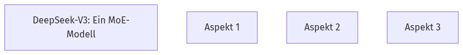

DeepSeek-V3: Ein MoE-Modell
Hast du dich je gefragt, was DeepSeek-V3 so besonders macht? 🤔 DeepSeek-V3 ist ein großes Mixture-of-Experts (MoE) Modell mit 671 Milliarden Parametern. Für jedes Token werden davon 37 Milliarden aktiviert. Es ist ein offenes Modell, das die Lücke zu Closed-Source-Modellen schließen will.
🧠
Quick Check
Wie viele Parameter werden bei DeepSeek-V3 für jedes Token aktiviert?
Für jedes Token werden bei DeepSeek-V3 37 Milliarden Parameter aktiviert, obwohl das Modell insgesamt 671 Milliarden Parameter besitzt.
MoE-Modell-Struktur

Klicke, um die Architektur eines MoE-Modells zu erkunden.
Effiziente Architektur: MLA & DeepSeekMoE
Wie erreicht DeepSeek-V3 seine starke Leistung und Kosteneffizienz? 💡 DeepSeek-V3 nutzt Multi-head Latent Attention (MLA) für effiziente Inferenz und DeepSeekMoE für kostengünstiges Training. Diese Architekturen wurden bereits in DeepSeek-V2 validiert.
🧠
Quick Check
Welche Architekturen werden in DeepSeek-V3 für effiziente Inferenz und kostengünstiges Training verwendet?
DeepSeek-V3 verwendet Multi-head Latent Attention (MLA) für effiziente Inferenz und DeepSeekMoE für kostengünstiges Training.
Leistungssteigerung: Lastausgleich & MTP
Möchtest du wissen, wie DeepSeek-V3 seine Fähigkeiten weiter verbessert? 🚀 DeepSeek-V3 implementiert zwei Strategien zur Leistungssteigerung. Erstens eine Hilfsverlust-freie Strategie für Lastausgleich, um Leistungseinbußen zu minimieren. Zweitens ein Multi-Token Prediction (MTP) Trainingsziel.
🧠
Quick Check
Welche zwei zusätzlichen Strategien werden in DeepSeek-V3 zur Leistungssteigerung eingesetzt?
DeepSeek-V3 nutzt eine Hilfsverlust-freie Strategie für Lastausgleich und ein Multi-Token Prediction (MTP) Trainingsziel zur Leistungssteigerung.
Effizientes Training mit FP8 Mixed Precision
Wie trainiert DeepSeek-V3 so effizient? ⚡ DeepSeek-V3 unterstützt FP8 Mixed Precision Training. Dies ist eine vielversprechende Lösung für effizientes Training, die Trainingsbeschleunigung und reduzierten GPU-Speicherverbrauch ermöglicht.
🧠
Quick Check
Welche Vorteile bietet das FP8 Mixed Precision Training in DeepSeek-V3?
Das FP8 Mixed Precision Training in DeepSeek-V3 ermöglicht sowohl beschleunigtes Training als auch reduzierten GPU-Speicherverbrauch.
Optimiertes Trainings-Framework
Welche cleveren Tricks nutzt DeepSeek-V3 im Trainings-Framework? ⚙️ DeepSeek-V3 verwendet den DualPipe-Algorithmus für effiziente Pipeline-Parallelität, der Kommunikationsaufwand durch Überlappung mit Berechnung verbirgt. Auch effiziente Cross-Node All-to-All Kommunikations-Kernels werden eingesetzt.
🧠
Quick Check
Welcher Algorithmus wird in DeepSeek-V3 für effiziente Pipeline-Parallelität verwendet?
DeepSeek-V3 verwendet den DualPipe-Algorithmus für effiziente Pipeline-Parallelität, der die Kommunikation während des Trainings durch Überlappung mit der Berechnung verbirgt.
Stabiler Pre-Training-Prozess
War das Pre-Training von DeepSeek-V3 eine reibungslose Fahrt? 🎢 DeepSeek-V3 wurde auf 14.8 Billionen hochwertigen und diversen Tokens vortrainiert. Der Pre-Training-Prozess war bemerkenswert stabil.
🧠
Quick Check
Wie viele Tokens wurden für das Pre-Training von DeepSeek-V3 verwendet?
DeepSeek-V3 wurde auf 14.8 Billionen hochwertigen und diversen Tokens vortrainiert.
Kontextlängen-Erweiterung & Post-Training
Wie wird DeepSeek-V3 nach dem Pre-Training weiter verbessert? 📈 Nach dem Pre-Training erfolgte eine zweistufige Kontextlängen-Erweiterung auf 32K und dann auf 128K. Anschließend wurde Post-Training durchgeführt.
🧠
Quick Check
Welche Methoden werden im Post-Training von DeepSeek-V3 angewendet?
Im Post-Training von DeepSeek-V3 werden Supervised Fine-Tuning (SFT) und Reinforcement Learning (RL) angewendet.
Nach dem Pre-Training

Klicke, um die Schritte nach dem Pre-Training zu verstehen.
Wirtschaftliche Trainingskosten
Wie kostengünstig ist das Training von DeepSeek-V3 wirklich? 💰 DeepSeek-V3 zeichnet sich durch außergewöhnlich wirtschaftliche Trainingskosten aus. Das gesamte Training, inklusive aller Stufen, kostet nur 2.788 Millionen H800 GPU-Stunden.
🧠
Quick Check
Wie hoch sind die Gesamtkosten für das Training von DeepSeek-V3 in H800 GPU-Stunden?
Die Gesamtkosten für das Training von DeepSeek-V3 belaufen sich auf 2.788 Millionen (2788K) H800 GPU-Stunden.
Leistungsvergleich: Open- vs. Closed-Source
Wie schneidet DeepSeek-V3 im Vergleich ab? 🏆 Umfassende Evaluierungen zeigen, dass DeepSeek-V3-Base das stärkste verfügbare Open-Source-Basismodell ist, besonders in Code und Mathematik.
🧠
Quick Check
In welchen Bereichen ist DeepSeek-V3-Base besonders stark?
Umfassende Evaluierungen zeigen, dass DeepSeek-V3-Base besonders in Code und Mathematik das stärkste verfügbare Open-Source-Basismodell ist.
Visual Title Here
Visual description and instructions here...